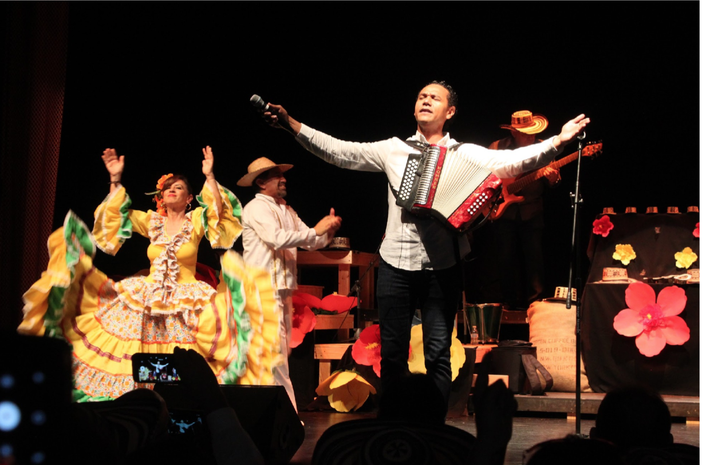
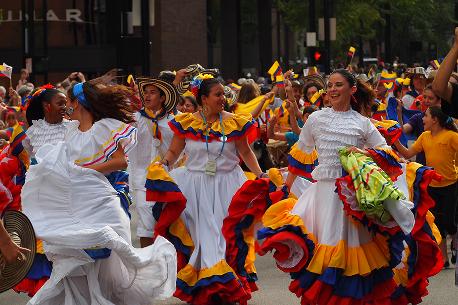
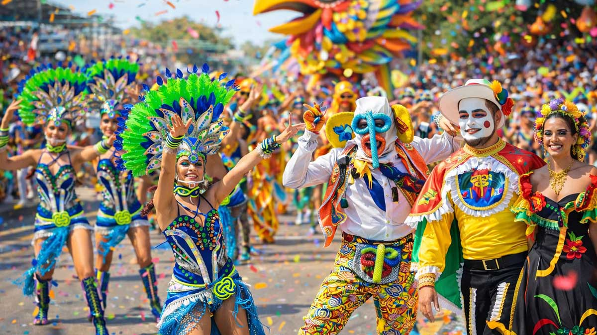
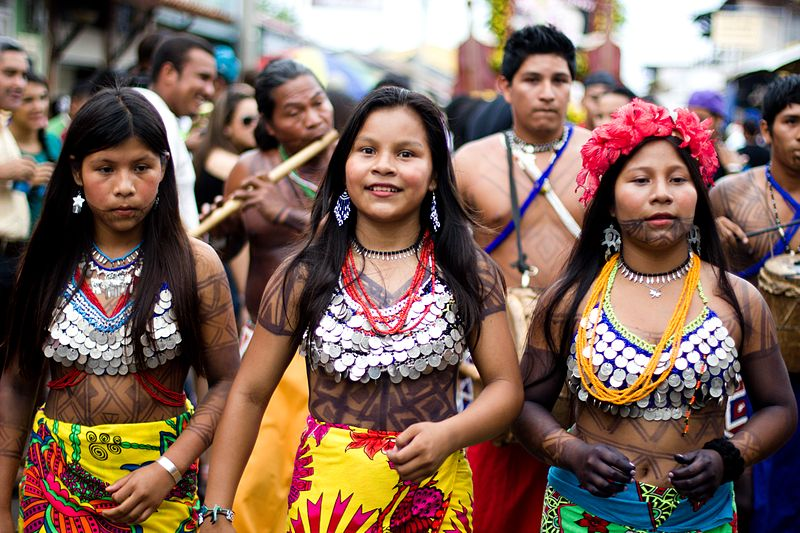

Uma mistura vibrante de influências indígenas, africanas e espanholas que formam um dos folclores mais ricos do mundo.

A Colômbia é conhecida mundialmente por ritmos como a cumbia e o vallenato. A música faz parte do DNA do país, presente em cada esquina e celebração.

Vibrantes e coloridas, as danças misturam influências históricas. A Cumbia é a expressão máxima dessa fusão, simbolizando o galanteio e a liberdade.

Considerado Patrimônio da Humanidade pela UNESCO, é uma explosão de cores, máscaras de marimonda e alegria que paralisa o país anualmente.

Das mochilas Wayuu tecidas à mão aos rituais ancestrais da Sierra Nevada, os povos originários são os guardiões da terra e da identidade colombiana.
Gabriel García Márquez imortalizou o país através de Macondo. Sua obra transformou o cotidiano colombiano em uma poesia eterna reconhecida mundialmente.